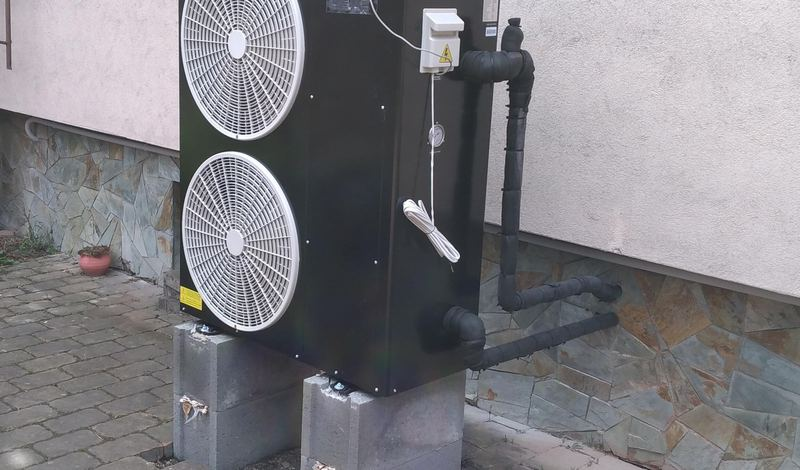

Lukáš Pavelek
Vodoinstalatér a topenář z Hlubočce u Opavy. Podnikám od roku 2002 a na Firmy.cz mám 5,0 z 10 hodnocení.

Co dělám
Kotle, tepelná čerpadla, voda, plyn, kanalizace a vodárny. Od montáže po opravy.
- KotlePlynové i na tuhá paliva, montáž a napojení.
- Tepelná čerpadlaMontáž a napojení na topení a vodu.
- Voda a kanalizaceRozvody v koupelnách i v celém domě.
- Rozvody plynuPlynové potrubí v domě a připojení kotle.
- Domovní vodárnyVodárny a ponorná čerpadla ke studni.
- WC, bojlery, myčkyMontáž a připojení spotřebičů.
Co říkají zákazníci
„Jsem velmi spokojený, jak s ochotou, se solidní prací, radou i komunikací.“
zákazník na Firmy.cz
„Oceňuji ochotu, rychlost provedené práce i komunikaci.“
zákazník na Firmy.cz
„Skvělá komunikace, ochota, rychlé řešení a provedení opravy.“
zákazník na Firmy.cz